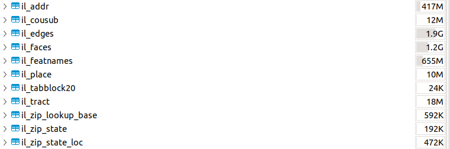
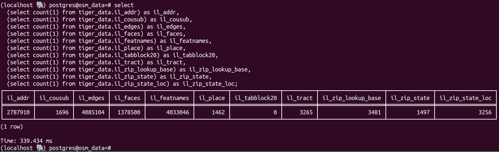

Geocoder using PostGis in Postgres
by Paulo Gonzalez
2024-04-22 | postgres postgis addresses
Addresses are a fascinating vertical. I've worked with addresses in the past in side projects, consulting projects and full time jobs. I learned thing or two about them, including the difference of a valid address and a mailable address, but that's for a different conversation. Recently, I worked on a side project and thought about plotting some addresses on a map.
Plotting a single point or a few points is straightforward. You need a lat/lon value that generates a point, then, you use that point in a map. One of the ways to do this is to use a geocoding api, send your address to it, pay for usage, get the lat/lon back and call it a day. I've done this in the past and it's a legit way to build things. In this side project, for science reasons, I wanted to see what it would take to do get a lat/lon for a bunch of values, not just one. These api services have caps on them. Google Maps gives you 100k requests a month, 500k if you ask (beg) them for it. There is another one that has tiers, one for 100k ($10/mo) and one for 1mil ($50/mo). In this case, I pretended I had a couple of million existing records that I wanted to backpopulate/hydrate with lat/lon values. This blog explores an alternative to the api route: using open source tools (Postgresql, PostGis) and data (OpenStreetMaps) to solve the geocoding problem. In short, the problem statement is: when given an address in the US, please give me the lat/lon values for it. Now, do it for X addresses. It's a simple ask, for the non technical folks and a fairly interesting problem for the technical ones. I'll explain some takeaways below.
To explore this, I did some thinking, some research, some GPTing, a lot of reading the docs and only after I had tried loading some data in the database I ran into some VERY useful articles that showed the way. In hindsight, it would have been great to have found them before, but I learned a thing or two in some rabbit holes (did you know that: the posgresql package for Ubuntu Lunar (23.04) was archived, Ubuntu has a 23.10 called Mantic, a couple other things as well). Always something to learn. I digress.
The goal here is to build a geocoder leveraging Postgresql's PostGis[0] extension and using TIGER (Topologically Integrated Geographic Encoding and Referencing) census data. The ultimate goal is to be able to take in an address, call a function with it as an input and output a lat/lon associated with the input.
Getting the lat/lon for the Sears Tower here in Chicago:
(localhost 🐘) postgres@osm_data=# SELECT *, ST_X(geomout) AS longitude, ST_Y(geomout) AS latitude FROM geocode('233 S Wacker Dr, Chicago, IL 60606', 1);
┌──────────────────────────────────────────┬────────────────────────────────────────────────────┬────────┬───────────────────┬───────────────────┐
│  addy          │  geomout            │ rating │  longitude   │  latitude    │
╞══════════════════════════════════════════╪════════════════════════════════════════════════════╪════════╪═══════════════════╪═══════════════════╡
│ (233,S,Wacker,Dr,,,Chicago,IL,60606,t,,) │ 0101000020AD1000008CC2313FBDE855C0F10C58D873F04440 │  0 │ -87.6365507112443 │ 41.87853531169265 │
└──────────────────────────────────────────┴────────────────────────────────────────────────────┴────────┴───────────────────┴───────────────────┘
(1 row)
Time: 13359.711 ms (00:13.360)
(localhost 🐘) postgres@osm_data=#
I wasn't surprised to find a blog from Ryan Lambert on this topic. I bought Ryan's book about Postgis but haven't had the chance to dig in other than on a weekend at nights last year. I've been interested in charts and maps for a big part of my life and his book lives in the intersection of these concepts. On one hand, I'm thankful for not bumping into it earlier, it made me have to solve a couple of problems on my own but once that was done, it was mostly about reading the docs and expanding a little bit on what Ryan had on his article (mostly about getting all of the data for the US). It would have been nice to have found it first though. Ryan mentioned he followed a different article when building his project, so I thought I'd link it here as well: article from Michelle Tobias. Alright, with all that out of the way, let's move on.
Loading data for all 50 states
The one thing Ryan's article and the Tiger + PostGis docs didn't give snipets for was how to get the data for all of the US in one go. I had to modify the command above to pass in a list of all the 50 states. Then, I had to do some `sed` work to replace the `PGPASSWORD` that was hardcoded incorrectly and also the database (since I didn't pass it in like Ryan did above). The errors were good and lead you to solutions though, no complaints. Once I had that, I monitored the first couple of states, saw the tables be created in the database and did some quick back of the napkin math to see if my little machine in the living room would have enough room to fit all the data we were putting in. I decided to do it and went to bed, so I don't know how long it took for everything to load. It was ready when I woke up though. In the end, it was 136GB for all of the US.
# I had a one liner, but it was too long for this blog. I asked GPT for a multiline one:
# passing in the `-d` flag did nothing unfortunately.
psql -U postgres -h localhost --no-psqlrc -d osm_data -tA -c \
"SELECT Loader_Generate_Script(ARRAY['AL', 'AK', 'AZ', 'AR', 'CA', 'CO', \
'CT', 'DE', 'FL', 'GA', 'HI', 'ID', 'IL', 'IN', 'IA', 'KS', 'KY', 'LA', 'ME', \
'MD', 'MA', 'MI', 'MN', 'MS', 'MO', 'MT', 'NE', 'NV', 'NH', 'NJ', 'NM', 'NY', \
'NC', 'ND', 'OH', 'OK', 'OR', 'PA', 'RI', 'SC', 'SD', 'TN', 'TX', 'UT', 'VT', \
'VA', 'WA', 'WV', 'WI', 'WY', 'DC'], 'sh')" > /gisdata/all_states_load.sh
# then, I had to do the following (use the right password and use the name of the database I created):
sed -i 's/export PGPASSWORD=yourpasswordhere/export PGPASSWORD=postgres/g' all_states_load.sh
sed -i 's/export PGDATABASE=geocoder/export PGDATABASE=osm_data/g' all_states_load.sh
# and finally, I did need to do was run it as `sudo` due to where the script was created
sudo ./all_states_load.sh
This seems to be the normal web workflow, I asked some folks about this problem and they haven't even considered building something locally for it. It's just easier to maintain and IMO the de-facto solution for this problem.
I just don't think the use case I had in mind is a real one. It's not a source of pain for many folks.
This is the non-standard web flow. This is usually done by data folks that are looking at data on their local machine or a local beefy server somewhere.
I thought about a few ways to optimize a backpop with the setup above. None quite excellent in my opinion. Likely the best one would be to use a beefy computer where these queries would be trivial (would be interesting to benchmark the results).
But in the end, the problem is still annoying, either because you need to do it one request at a time (individually) or need to support an infrastructure somewhere to do it in bulk. Appending geocoding to addresses in bulk is challenging. It seems like it's more of a dynamic problem, folks handle a few For example: Lyft and Uber may get a request for an address and persist that geo. They do it on the spot, not after. This may be the way.
Who knows, maybe this could be a service. CSV in, CSV with 2 extra columns out.
Creating scripts leveraging Postgres
One cool thing I saw was how folks were able to leverage a table in Postgres to create text files (scripts) locally: Here is part of the process:
-- Source: https://github.com/postgis/postgis/blob/master/extras/tiger_geocoder/tiger_loader_2023.sql#L218-L240
INSERT INTO loader_platform(os, wget, pgbin, declare_sect, unzip_command, psql, path_sep, loader, environ_set_command, county_process_command)
VALUES('sh', 'wget', '',
E'TMPDIR="${staging_fold}/temp/"
UNZIPTOOL=unzip
WGETTOOL="/usr/bin/wget"
export PGBIN=/usr/lib/postgresql/16/bin
export PGPORT=5432
export PGHOST=localhost
export PGUSER=postgres
export PGPASSWORD=yourpasswordhere
export PGDATABASE=geocoder
PSQL=${PGBIN}/psql
SHP2PGSQL=shp2pgsql
cd ${staging_fold}
', E'rm -f ${TMPDIR}/*.*
${PSQL} -c "DROP SCHEMA IF EXISTS ${staging_schema} CASCADE;"
${PSQL} -c "CREATE SCHEMA ${staging_schema};"
for z in *.zip; do $UNZIPTOOL -o -d $TMPDIR $z; done
cd $TMPDIR;\n', '${PSQL}', '/', '${SHP2PGSQL}', 'export ',
'for z in *${table_name}*.dbf; do
${loader} -D -s 4269 -g the_geom -W "latin1" $z ${staging_schema}.${state_abbrev}_${table_name} | ${psql}
${PSQL} -c "SELECT loader_load_staged_data(lower(''${state_abbrev}_${table_name}''), lower(''${state_abbrev}_${lookup_name}''));"
done');
Here is where the function is defined in the code:
-- Source: https://github.com/postgis/postgis/blob/master/extras/tiger_geocoder/tiger_loader_2023.sql#L456-L508
CREATE OR REPLACE FUNCTION loader_generate_script(param_states text[], os text)
  RETURNS SETOF text AS
$BODY$
SELECT
loader_macro_replace(
replace(
loader_macro_replace(declare_sect
, ARRAY['staging_fold', 'state_fold','website_root', 'psql', 'state_abbrev', 'data_schema', 'staging_schema', 'state_fips'],
ARRAY[variables.staging_fold, s.state_fold, variables.website_root, platform.psql, s.state_abbrev, variables.data_schema, variables.staging_schema, s.state_fips::text]
), '/', platform.path_sep) || '
' ||
-- State level files - if an override website is specified we use that instead of variable one
array_to_string( ARRAY(SELECT 'cd ' || replace(variables.staging_fold,'/', platform.path_sep) || '
' || platform.wget || ' ' || COALESCE(lu.website_root_override,variables.website_root || '/' || upper(lookup_name) Â ) || '/tl_' || variables.tiger_year || '_' || s.state_fips || '_' || lower(table_name) || '.zip --mirror --reject=html
'
|| 'cd ' || Â replace(variables.staging_fold,'/', platform.path_sep) || '/' || replace(regexp_replace(COALESCE(lu.website_root_override, variables.website_root || '/' || upper(lookup_name) ), 'http[s]?://', ''),'ftp://','') Â Â || '
' || replace(platform.unzip_command, '*.zip', 'tl_' || variables.tiger_year || '_' || s.state_fips || '*_' || table_name || '.zip ') || '
' ||loader_macro_replace(COALESCE(lu.pre_load_process || E'\n', '') || platform.loader || ' -D -' || Â lu.insert_mode || ' -s 4269 -g the_geom '
|| CASE WHEN lu.single_geom_mode THEN ' -S ' ELSE ' ' END::text || ' -W "latin1" tl_' || variables.tiger_year || '_' || s.state_fips
|| '_' || lu.table_name || '.dbf tiger_staging.' || lower(s.state_abbrev) || '_' || lu.table_name || ' | '::text || platform.psql
|| COALESCE(E'\n' ||
lu.post_load_process , '') , ARRAY['loader','table_name', 'lookup_name'], ARRAY[platform.loader, lu.table_name, lu.lookup_name ])
FROM tiger.loader_lookuptables AS lu
WHERE level_state = true AND load = true
ORDER BY process_order, lookup_name), E'\n') ::text
-- County Level files
|| E'\n' ||
array_to_string( ARRAY(SELECT 'cd ' || replace(variables.staging_fold,'/', platform.path_sep) || '
' ||
-- explode county files create wget call for each county file
array_to_string (ARRAY(SELECT platform.wget || ' --mirror  ' || COALESCE(lu.website_root_override, variables.website_root || '/' || upper(lookup_name)  ) || '/tl_' || variables.tiger_year || '_' || s.state_fips || c.countyfp || '_' || lower(table_name) || '.zip ' || E'\n'  AS county_out
FROM tiger.county As c
WHERE c.statefp = s.state_fips), ' ')
|| 'cd ' || Â replace(variables.staging_fold,'/', platform.path_sep) || '/' || replace(regexp_replace(COALESCE(lu.website_root_override,variables.website_root || '/' || upper(lookup_name) Â || '/'), 'http[s]?://', ''),'ftp://','') Â || '
' || replace(platform.unzip_command, '*.zip', 'tl_*_' || s.state_fips || '*_' || table_name || '*.zip ') || '
' || loader_macro_replace(COALESCE(lu.pre_load_process || E'\n', '') || COALESCE(county_process_command || E'\n','')
|| COALESCE(E'\n' ||lu.post_load_process , '') , ARRAY['loader','table_name','lookup_name'], ARRAY[platform.loader  || ' -D ' || CASE WHEN lu.single_geom_mode THEN ' -S' ELSE ' ' END::text, lu.table_name, lu.lookup_name ])
FROM tiger.loader_lookuptables AS lu
WHERE level_county = true AND load = true
ORDER BY process_order, lookup_name), E'\n') ::text
, ARRAY['psql', 'data_schema','staging_schema', 'staging_fold', 'state_fold', 'website_root', 'state_abbrev','state_fips'],
ARRAY[platform.psql, Â variables.data_schema, variables.staging_schema, variables.staging_fold, s.state_fold,variables.website_root, s.state_abbrev, s.state_fips::text])
AS shell_code
FROM loader_variables As variables
CROSS JOIN (SELECT name As state, abbrev As state_abbrev, lpad(st_code::text,2,'0') As state_fips,
lpad(st_code::text,2,'0') || '_'
|| replace(name, ' ', '_') As state_fold
FROM tiger.state_lookup) As s CROSS JOIN tiger.loader_platform As platform
WHERE $1 @> ARRAY[state_abbrev::text] Â Â Â -- If state is contained in list of states input generate script for it
AND platform.os = $2 Â -- generate script for selected platform
;
$BODY$
  LANGUAGE sql VOLATILE;
Then, the docs GUIDE YOU [4] to execute that query as arg to psql and pipe it to a file like the below... isn't that amazing? The docs show a version, but I'm showing Ryan's due to the `--no-psqlrc` flag, that bit me and had me do an extra search to find how to skip it :) Maybe it will save you 5 mins.
# direct copy from: https://blog.rustprooflabs.com/2023/10/geocode-with-postgis-setup
psql -c "SELECT Loader_Generate_Script(ARRAY['CO'], 'sh')" \
-d geocode2022 \
--no-psqlrc -tA > /gisdata/co_script_load.sh
chmod +x co_script_load.sh
./co_script_load.sh
| Setup | Request Duration (s) | Day (84,600s) | Month (2,592,000s, 30 day avg) | 5 mil duration (days) |
|---|---|---|---|---|
| Living Room small box, target data in same database (upper bound) | 15 | 5,760 | 172,800 | 868.06 |
| Living Room small box, target data in same database (actual) | 13.3 | 6,496 | 194,887 | 769.68 |
| API, one at a time | 2 | 43,200 | 1,296,000 | 115.74 |
| API, one at a time | 1 | 86,400 | 2,592,000 | 57.87 |
| API, one at a time | 0.5 | 172,800 | 5,184,000 | 28.94 |
* Living Room small box, target data in same database: In my benchmarks, it took ~13s to do one record, so 15s is fairly safe as an upper bound duration estimate.
I'd love to benchmark this on a very powerful machine. That's for another time (maybe decade?) though.
As I mentioned above, in the end of the process I had 136GB in the database, at least, according to DBeaver. A friend asked me about the counts in some tables, so I looked into it. The loading scripts organize the data into different schemas (tiger, tiger_data, tiger_staging) and then in different tables for each state. It names them appropriately as well.
Let's isolate IL in this case. In the `tiger_data` schema, we have a few tables for IL:
And here are some counts for IL:
Thanks for reading!